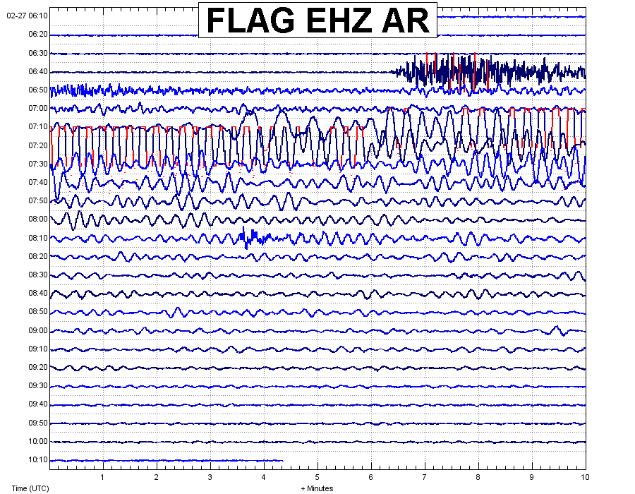

February 27, 2010
Magnitude 8.8 great earthquake in Chile
A great earthquake of magnitude 8.8 occurred February 27, 2010 at 06:34:14 UTC about 200 miles southwest of Santiago, Chile. The earthquake occurred on a trust fault at the boundary between the South American and Nazca tectonic plates at a depth of approximately 35 km. The epicenter of the earthquake is located offshore and generated a tsunami. The USGS reports that over 121 aftershocks of magnitude greater than 5.0 have occurred since 16:00 UTC on March 1, 2010. For more information on this earthquake please visit the USGS website by clicking here.
Chile is known to experience great earthquakes in historic time, including the largest recorded earthquake of magnitude 9.5 that occurred in 1960.
The P-wave arrived at the Flagstaff, Arizona (FLAG) seismic station at 6:46:21 UTC or at approximately 11:46 pm February 26th (MST). The initial P-waves took 12 minutes 4 seconds to arrive in Flagstaff, which was fallowed by at least three hours of long-period surface waves seen in the seismogram below.
